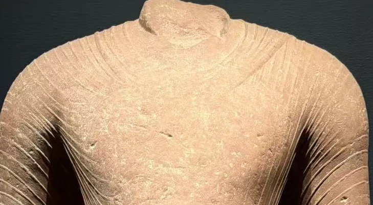
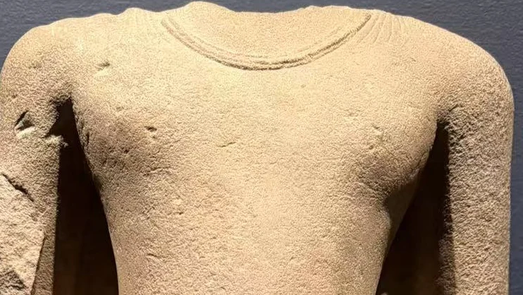
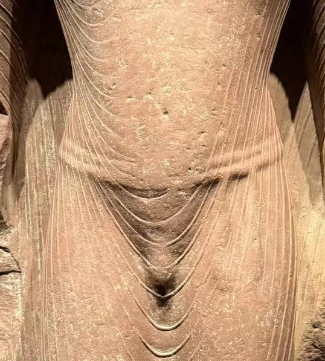
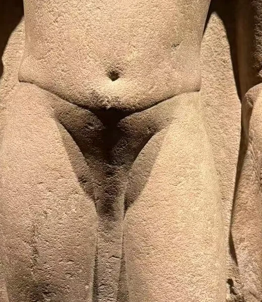
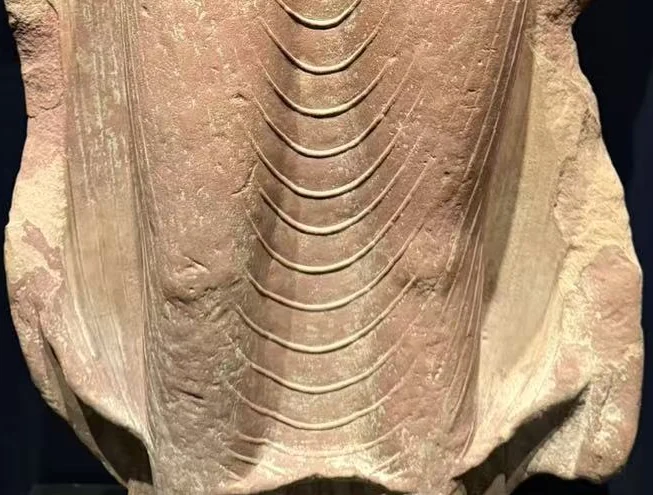
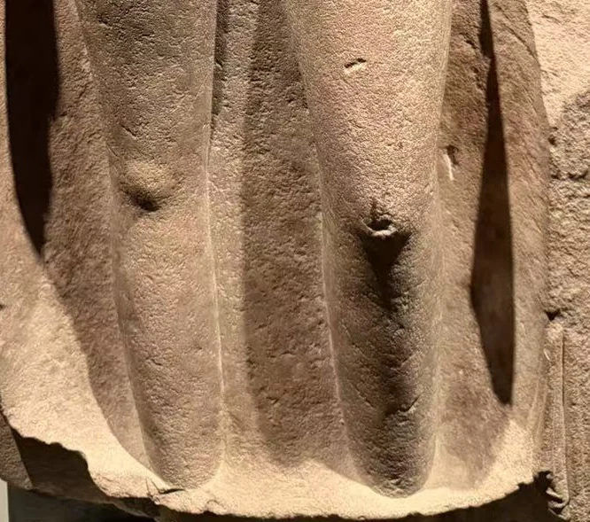

17 / 笈多：衣纹与身体
衣纹与身体：马图拉、鹿野苑
从衣领、腹部和衣缘，比较三件5世纪躯干。


全图与局部均各自缩放，每组局部对应同一身体部位，并非实物等比例；实际残高见下方资料表。
纳尔逊的两件躯干把比较的问题放得很清楚：没有头部，我们还能怎样读一尊佛像？马图拉45-15以杂色红砂岩雕成，胸腹与腿上的平行衣褶像细绳一样，沿着身体表面起伏。鹿野苑39-19使用浅黄色砂岩，大面积躯干相对平整，衣服更多由领口、衣缘与下部轮廓提示。
先看衣领，再看腹部，最后看衣缘，三处的差别比“厚重”或“轻盈”这样的概括更具体。红砂岩像把布料的细线留在身体之上；浅色像则让胸腹体量连成较安静的表面。克利夫兰1943.278同样归于鹿野苑，可以继续比较肩部转折、下垂手臂与腿部轮廓。两尊鹿野苑像的残存部位、尺寸和衣缘处理各有差异。 [1][2][3]
衣领：细褶与窄窄的弧边


腹部：线条怎样附着于身体


衣缘：褶线与薄薄的轮廓


三件都定为5世纪，也都属于身体与衣服关系的不同解答。三件残高从76.2厘米到114.94厘米，实际尺度有明显差异。馆方还记录45-15于1945年购自卢芹斋，39-19在1937年借展后于1939年购入。 [1][2]
相互参看

| 馆藏号 | 归属 | 材料 | 残高 |
|---|---|---|---|
| 45-15 | 马图拉 | 杂色红砂岩 | 114.94厘米 |
| 39-19 | 鹿野苑 | 浅黄色砂岩 | 86.36厘米 |
| 1943.278 | 鹿野苑 | 砂岩 | 76.2厘米 |
本篇作品
佛立像残躯：马图拉 · 45-15
- 原题名
- Torso of a Buddha
- 年代
- 5世纪
- 材料
- 杂色红砂岩
- 尺寸
- 114.94 × 52.07厘米
- 编号
- 45-15
- 收藏／展出
- 纳尔逊—阿特金斯艺术博物馆
- 地域关系
- 归属制作中心：马图拉

佛立像残躯：鹿野苑 · 39-19
- 原题名
- Torso of a Buddha
- 年代
- 5世纪
- 材料
- 浅黄色砂岩
- 尺寸
- 86.36 × 36.83 × 17.78厘米
- 编号
- 39-19
- 收藏／展出
- 纳尔逊—阿特金斯艺术博物馆
- 地域关系
- 归属制作中心：鹿野苑
佛立像残躯：鹿野苑 · 1943.278
- 原题名
- Torso of a Buddha
- 年代
- 5世纪
- 材料
- 砂岩
- 尺寸
- 高76.2厘米
- 编号
- 1943.278
- 收藏／展出
- 克利夫兰艺术博物馆
- 地域关系
- 归属制作中心：鹿野苑